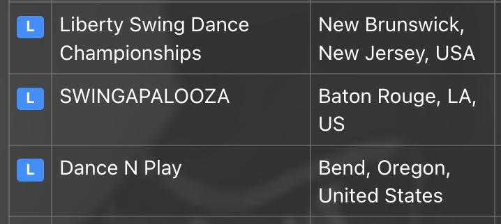

WSDC Analytics Brief · draft · not in site navigation
1 / 1
Core Meeting · analytics committee
Points Registry and board analytics: what the public layer shows, and what it misses
A plain look at what the open registry can support, where the rules already ask for more than the public lookup shows, and which process fixes unlock the committee’s questions.
Meeting with the analytics committee
Core Why this call
What we want from the call
On the table
Reconcile public data vs what reporting already requires vs what is actually retained
Map the board agenda onto those limits
Agree which processes to fix first
Not today
Not a “bad database” lecture. This is what deep work on the open registry surfaces
Start with a shared data and process frame; how to implement tools is the committee’s call
Not promising full board numbers before sources are reconciled
Aside: wsdc-analytics already publishes analysis on public data. That shows what is possible from outside. It is not a mandate for the committee.
Core 1 · Inventory
What the public Points Registry gives you
The official record of WSDC Jack & Jill results at Registry Events. From outside, that mostly means point-bearing competitor histories.
Available
Dancers with a WSDC Competitor ID and awarded points
Event editions and scored results by contest
Tier as a size band for division×role (range, not exact headcount)
Registry event calendar/list (separate from who stepped on the floor)
Not in the open layer
A full contest starting list in analytics-ready form
Under §2.3 Competitor Results Reporting, members report all WSDC J&J results. The reporting form already asks for more than the public lookup shows.
All petitions
Finalists’ WSDC IDs (when an ID has been assigned)
Competitor counts per division (for Tier)
List of all competitors registered in WSDC Jack & Jill contests
The question is not “should we collect lists?”
The rules already ask for the registered-competitor list. The question is whether it is retained centrally, for which years, in what form, and whether it can be joined to the Points Registry for analytics.
Registry Event Rules 2026.1B §2.3 (items 1-4). Results due no later than three days after the event closes.
Core 2 · Board agenda
Four directions from the committee ask
Competitor base 2021-2026: counts by skill level; overall community; region if possible
Points & tiers: current structure; impact of changes; progression for the majority (many points earned by a small minority)
Event landscape & capacity: where events are needed; growth vs limiting new events
Point structure: how to test with data whether the structure should change
Next slides are not numbers. They map what blocks a straight answer and what process work unlocks one.
Core Bridge
From agenda to four gaps
Without shared definitions of “dancer,” “entrant,” “region,” and “event,” board reports will argue with each other. The open registry has four structural holes.
A. Identity
An ID appears after the first point. Before that, the person is not a registry entity.
B. Coverage
The public layer is scored history. Full entry lists are required in reporting, but not exposed publicly.
C. Data quality
Manual intake: name variants, empty locations, same labels on different series.
D. Geo / landscape
Without stable geo and entry-level demand, capacity stays anecdotal.
Core Gap A · Identity
IDs are assigned only after a point
This is not an inference from the scrape. The rules say a Competitor ID is assigned only after the dancer receives a point.
Before the first point, the person is not trackable in the Points Registry as an entity
Someone can compete repeatedly and still be invisible to public analytics
“Dancers in the community” and “unique WSDC IDs with points” are different metrics
Registry Event Rules 2026.1B §3.2.2c; Overview: ID after at least one J&J point.
Core Gap A · Impact
How this hits the agenda
Board questions
Q1: undercounts “actives,” especially Newcomer and Novice
Q2: the entry funnel is cut off at people who already scored
Q3: novice demand barely shows in the registry
Process moves
Decide policy: ID only after points (current) or earlier
If you keep “after points,” label reports as scored population, not “whole community”
For full population work, lean on the registered-competitor lists from §2.3
Core Gap B · Coverage
Public registry ≠ full entry list
Outside, we mostly see people who earned points. The full list of competitors registered in J&J is already required on the Event Reporting Form, but it is not in the open Points Registry.
Visible outside
Point rows / ID histories
Indirectly: Tier by division×role size
Not visible outside
Everyone registered in the contest
Exact headcount for capacity
Share of entrants with no points
Tier helps with order of magnitude. It does not replace a named entry list.
Core Gap B · Impact
Impact and path forward
Board questions
Q1: skill counts from the registry = scored, not starters
Q2: cannot separate “dances little” from “never reaches points”
Q3-Q4: capacity and point-structure scenarios stay fragile without the funnel
Process path
Check whether the already-required list of all competitors is retained
One machine-readable format and retention window
Separate analytics on registry vs analytics on entries
Core Gap C · Data quality
Entity quality: what shows up in open data
Deep work on the registry keeps hitting name and location mismatches. That looks like manual intake with weak verification, not malice.
1. Multiple titles for one series
Calendar strings like Asia WCS Open XI, Asia WCS Open XIII, and Asia WCS Open - 10th Anniversary resolve to Asia WCS Open. Without aliases, time series break.
2. Empty location in the results extract
For Scandinavian Open, the local results extract has an empty location on all 993 rows. Geography has to be recovered elsewhere.
3. Brand spelling variants
St.Petersburg WCS Nights / Saint Petersburg WCS Nights; Vestigala / Westie Gala. Without aliases, fake “new” events appear.
4. Same label, different histories
Spring Swing: Stockholm and Detroit. Sunny Side Dance Camp: Crimea, then Torrevieja. You need explicit merge / keep-separate rules.
Core Gap C · Locations
Location garbage: why standardization matters
The same fields are written differently. Below is only a small sample from open data; the registry has many more rows like these.
Local language + casing:Kraków, malopolska, Polska instead of a canon like Kraków / Poland.No city: only Czech Republic. Not enough for an event map.

Country in 3 forms:USA / US / United States (state full vs LA).No country at all:Lake Geneva, IL. Humans guess USA; analytics sees a hole.
Proposed fix
Maintain separate central directories for events and locations, each with a canonical name. The directory should be public or at least visible to organizers. Organizer forms use dropdowns (event + location), not free text.
Core Gap C · Impact
Why you cannot “just count” without DQ
What breaks
Event and country series
Double counts or “missing” editions
Regional board conclusions
Automation without master data copies the mess
Foundation
Event directory: one canonical name / one ID
Location directory: city + country in one format (for US events, state too)
Organizer forms: dropdowns from those directories
Organizers own the accuracy of their rows
Core Gap C · Governance
Directory changes only in advance, under rules
Organizers must keep their event and location rows current. Any change to existing data or creation of a new event is requested ahead of time, so the master data can be updated before forms and results reporting.
Put change types in the regulations
New event → new ID + canonical name
Series rename (old name → alias / history)
Location change (city/country)
Correction of a directory error
History and access
Prefer a full history: names, locations, change dates
Directory: public or available to all organizers
Change requests before a deadline (not on reporting day)
No directory row → cannot select that event/location in the form
Otherwise free-text variants return (USA / US / United States) and “new” events that are really renames with a different ID.
Core Gap D · Landscape
Landscape and capacity on incomplete signals
“Where events are needed” and “whether to limit new ones” need demand and people geography. The public layer maps events and scored activity, not full demand.
Event city ≠ dancer home region (lots of travel)
Without entry lists, overloaded vs empty contests are hard to see
Bad locations draw false white space on the map
Core Gap D · Impact
Impact and process path
Risk for Q3-Q4
Capacity by feel instead of measurable headcount
Constraining growth where scored data understates demand
Changing point structure without a funnel model
What to lock in
Stable event geo (+ dancer region on registration/profile if possible)
Entry counts / full lists as a working analytics layer, not Tier alone
Three separate metrics: event supply, scored demand, entry demand
Core Summary
Matrix: what public data can answer today
Board question
Today (public registry)
What unlocks a fuller answer
Competitors by skill 2021-2026 (+ region)
Partial unique IDs with points; region weak / via event proxy
Retain and join §2.3 entry lists + ID policy + clean geo
Points/tiers & progression majority
Partial point distribution and scored transitions; entry funnel truncated
Entries + an explicit “majority” definition
Event landscape & capacity / where needed
Partial event map and scored activity; capacity indirect (tiers)
Partial simulations on scored history; limited without the full funnel
Agreed KPIs/scenarios + entries for sensitivity
On the public registry alone, none of these are fully closed. Say that out loud.
Core Close
Checklist: what to put in order
Inventory: where the §2.3 list of all competitors goes, and for which years it still exists
Retention and format: machine-readable template, retention window, owner
ID rule: keep “only after a point” or change it; how metrics are labeled
Event and location directories: canonical names; visible to organizers (or public)
Organizer forms: dropdowns only; changes/new rows in advance under regulations + name/location history
Board metric dictionary: scored population vs entry population vs community
Core Discovery
Four questions to reconcile
Where does the list of all competitors from the Event Reporting Form go today: central store, or only with organizers?
For which years (at least 2021-2026) are those lists still recoverable?
In what form: spreadsheets, forms, database? Is there a shared template?
Who owns the data, and who can change intake process?
Close: public data already supports careful analysis. Durable board answers arrive when §2.3 lists become a working layer and names/locations stop drifting. Tooling stays the committee’s choice.
Appendix
Appendix
Detail if the call has time.
Appendix Q1
Competitors by skill / region
Possible now
Unique IDs with points by year
Cuts by scored division
Rough geo via event location (proxy)
Not honestly “community”
Entrants without points
True dancer home region
Newcomer funnel before first point
Appendix Q2
Points, tiers, progression majority
Can: point concentration, progression speed, scored transitions; before/after rule changes
Careful: define “majority” (all IDs? active in a year? ≥N points?)
Need: entry data to separate “no points” from “did not enter”
Appendix Q3
Event landscape & capacity
Can: registry event counts, geography, 2021-2026 dynamics, large vs small via tiers/points
Partial: “need events here” via scored travel and event density
Needs entries: real contest load and unmet demand
Appendix Q4
Point structure change
Can: scenario recalculation on scored history; sensitivity of tops and thresholds
Risk: optimizing for people already in the registry without an entry model
First KPIs: majority growth, threshold fairness, organizer load
Appendix Tiers
Tier is a size band, not an exact count
In the rules, Tier depends on unique competitors in a division×role. Public data can sum those range bounds. That is order of magnitude, not headcount.
Useful for comparing event scale
Does not replace the named entry list from §2.3
Open-ended upper tiers need an uncertainty note
Appendix Definitions
Three populations. Do not mix them in one report
Scored population
Unique WSDC IDs with points in the period. What the public Points Registry gives.
Entry population
Everyone registered in WSDC J&J. Already required in §2.3 reporting; needs retention.
Community (broad)
Includes people outside scored outcomes and possibly outside registry events. Separate methodology.
Practice
Label which population each board report uses.
Appendix Navigation
Short path on the call (~12-15 min)
Goal of the call
Public registry vs what §2.3 already requires
Board agenda
Four gaps, one thesis each (+ locations + directory governance)